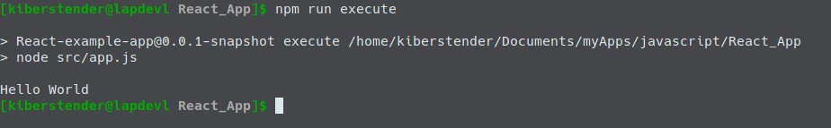
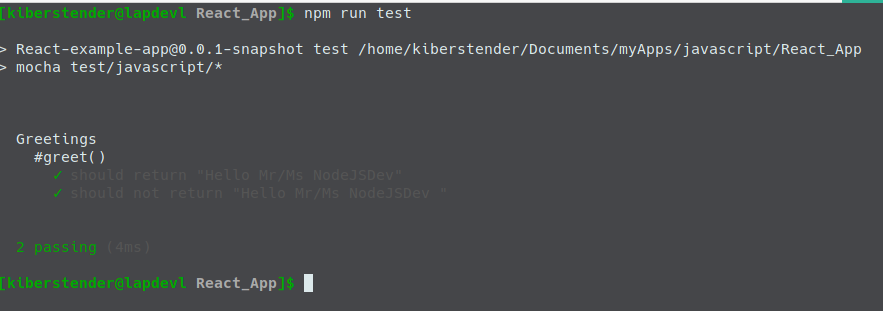
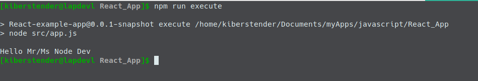

Introdução
Olá meu caro leitor. Algum tempo atrás eu estava estudando como colocar ReactJS em uma aplicação no trabalho e eu acabei esbarrando com uma coisa chamada WebJar que, se você assim como eu, veio do mundo do Java deve saber que é apenas uma biblioteca Javascript ou CSS empacotada em um arquivo Java (o famoso jar) que você pode gerenciar usando algum tipo de gerenciador de dependências como Maven, Gradle ou SBT. Como você pode me ver usando aqui. Esta é uma excelente característica, mas isso deixa seu backend um pouco dependente do frontend, sem mencionar que eu tentei usar algo com Babel e foi complicado de configurar.
Então nesta postagem irei comeãr uma série simples de postagens para criar uma aplicação simples em ReactJS usando uma stack pura de Javascript com NodeJS, Babel, Scss, Bootstrap e Live reload para que você não precise reiniciar a aplicação toda vez que mudar uma vírgula em seu código. E ao fazer isso sem acoplar seu código ao Backend você poderá adicionar essa aplicação em qualquer aplicação fullstack como SpringBoot, PlayFramework e outras muito facilmente
NodeJS e NPM
Primeiro, para fazer tudo isso você precisa entender o que são o Node e o NPM, porque precisamos disso e claro como instalar em sua máquina.
Hitória bem mal resumida( e não muito confiável) do Node
No ínicio havia Javascript no seu navegador, e isso era bom(mais ou menos). Mas Javascript diferente de java é uma linguagem escriptada(Duh!) e mesmo que tenha suas especificações ditadas por um companhia e publicada sob op nome ECMA, cada navegador tem sua própria forma de otimizar ou implementar as especificações. Assim em 2008 o Google lançou seu motor para interpretar Javascript mais rápido, mais confiável e estável: V8. Enquanto era muito bom no Google Chrome, algumas pessoas perceberam que fazendo algumas modificações neste motor eles poderiam usar Javascript não apenas em seus navegadores mas em seus computadores como um interepretador geral, similar ao Python. Estas pessoas nomearam essas modificações de NodeJS e então um imenso sonho começou a se tornar real: trabalhar usando uma e apenas uma linguagem tanto no backend como no frontend.
Como o Maven já era popular no mundo do Java eles introduziram uma tecnologia similar chamda NPM(Node Package Manager) que faz tudo o que o Maven faz para o Java, como baixar as dependências, colocar no 'classpath', empacotar, fazer o deploy e publicar sua aplicação/biblioteca. A diferença é que você precisa instalar o Maven separado do Java enquanto o NPM já vem com o Node.
Na confecção desta postagem o NodeJS está em sua 13ª versão e cresceu muito. Muitas bibliotecas e características foram adicionadas. E isso se tornou parte crucial no frontend moderno mesmo o Node sendo teoricamente o lado 'backend'. Porque o Node sendo um interpretador é possível não somente escrever Javascript ou CSS no seu código, com o Node você pode criar novas linguagens(chamadas transpilers) que serão mais tarde convertidas para Javascript como Coffeescript e Typescript ou CSS como Less e Sass. E indo um pouco mais fundo você pode ter algo um pouco impensável antes do Node como Jade, uma linguagem feita para diminuir a verbosidade do HTML.
Um pouco sobre o NPM
Como dito anteriormente, NPM é a abreviação de Node Package Manager(Gerenciador de Pacotes do Node) e ele trabalha gerenciando sua aplicação assim como o Maven faz. Para usar o NPM você simplesmente cria um arquivo na raiz de seu programa chamado package.json com a seguinte estrutura (mínima):
{ "name": "NomeDaMinhaAplicação", //1 "version": "0.0.1-snapshot", //2 "description": "Um exemplo de package.json", //3 "scripts": { //4 "run": "node app.js", "test": "executa sua biblioteca de testes" }, "dependencies": {//5 "a: "1.2.3", "b: "3.2.1" }, "devDependencies": { //6 "c: "1.2.3", "d: "3.2.1" } }
Existem mais propriedades que você pode ter em seu arquivo package.json, mas estes que estou mostrando são os mais importantes. Vamos dizer que são aquelas propriedades que você não pode esquecer de adicionar. Agora explicando separadamente cada item nós temos:
- name: Este é o nome de sua aplicação/biblioteca
- version: Esta é a versão de sua aplicação/biblioteca
- description: Aqui é onde você põe um breve descrição de o que sua aplicação/biblioteca faz. Este campo é útil para que outros que usam sua aplicação/biblioteca e é mostrado no site do NPM
- scripts: Aqui é onde você define os comandos de build, build:prod, test, run ou qualquer outro que achar necessário. Como os plugins do Maven onde você diz ao Maven como executar ou compilar sua aplicação
- dependencies: Aqui é onde você define as bibliotecas dos quais seu programa depende como React, Angular, MomentJS, etc
- devDependencies: Aqui é onde você define a lista de blibliotecas ou applicações que não serão empacotadas com o seu código. Imagine que você está programando em Coffeescript ou Typescript. Você não precisa empacotar o compilador de Coffeescript ou Typescript com seu código, porque no final tudo irá ser transformado em Javascript. Mas não comente os compiladores, por exemplo, Uglify é um programa que transforma seu código em algo ilegível para outras pessoas e uma vez que foi executado ele não é mais necessário, então é listado aqui ao invés da lista normal de dependências
Após criar este arquivo, o NPM irá ser mais usado para rodar sua aplicação e "instalar" suas dependências. Instalar aqui está entre aspas porque diferente do Maven que você tem que manualmente colocar suas dependências, NPM te dá uma síntaxe onde você pode baixar suas dependências ao mesmo tempo que atualiza seu arquivo package.json com a dependência caso ela não esteja listada ainda:
npm install dependencia-a dependencia-b
Este comando baixa a versão mais nova da dependencia-a ou dependencia-b, se você quer especificar a versão você pode usar o comando:
npm install dependencia@1.2.3 dependencia-b@^1.0.0
Este ^ entre @ e a versão siginifica que você quer a versão mais recente da série 1.x.x, então imagine que hoje a versão mais recente é 1.1.0, mas amanhã quando você rodar este comando a versão mais nova será 1.2.0. Este comando irá atualizar a versão de dependencia-b automaticamente quando baixá- la, entãoo você não precisa olhar todos os dias caso esteja esperando por um update da série 1.x.x para corrigir um bug ou problemas de desempenho.
E para adicionar dependências a propriedade devDependencies você usa uma síntaxe similar. Simplesmente adicione --save-dev ao seu comando npm install:
npm install --save-dev devDependencia-a devDependencia-b@^1.0.0 devDependencia-c@3.0.0
E último mas não menos importante, para executar nossos scripts criados na seção scripts você executa npm run-script nome-script(ou uma versão mais curta npm run nome-script)
npm run-script run #or npm run run npm run-script test #or npm run test
Instalando Node e NPM
Não irei detalhar muito o processo porque você pode encontrá-lo bem detalhado no site do próprio NodeJs. Vá para a página NodeJS, escolhe o pacote aporpriado para seu Sistema Operacional. Se estiver usando Windows você pode simplesmente dar dois cliques no arquivo EXE e seguir o padrão próximo~próximo~próximo~instalar. Se você está no Linux ou Mac você pode descompactar o arquivo tar.xz que você baixou usando qualquer aplicação gráfica ou terminal de sua preferência, colocar os conteúdos em algum diretório de sua escolha e criar a Variável de Ambiente chamada NODE_HOME apontando para /caminho/para/o/node/ e adicionar isso a variavel de ambiente PATH:
...... NODE_HOME=/caminho/para/o/node PATH=$PATH:$NODE_HOME/bin
Para mais detalhes por favor vá até esta página ou está aqui. Como eu disse, NPM vem junto com o Node, então uma vez que você instalou o Node, NPM estará instalado também. Agora teste para ver se tudo está Ok:

Se você preferir, muitos S.Os Linux têm o Node nos repositórios de seus gerenciadores de pacote, então você pode instalar assim:
sudo pacman -S nodejs #OSes baseados em Arch sudo apt-get install nodejs #Baseados em Debian ...# e assim por diante
Começando o projeto
Agora que você já entendeu o mínimo sobre o Node e como tê-lo rodando em sua máquina, vamos começar nosso projeto React como uma simples aplicação CLI(Command Line Interface ou Interface de Linha de Comando) escrita totalmente em Javascript.
O primeiro passo que você precisa dar é criar o diretório de nossa aplicação. Vamos chamar de React_App:
Agora vamos criar nosso package.json. Um bem simples:
{ "name": "React-example-app", "version": "0.0.1-snapshot", "description": "Uma aplicação simples em React", "scripts": { "test": "echo \"Erro: nenhum teste foi especificado\" && exit 1" } }
O próximo passo é criar o diretório src e dentro dele criar o arquivo app.js e como conteúdo adicione um simples 'console.log("Hello World")':
Ok agora temos o mínimo para nossa aplicação. Edite seu arquivo package.json e adicione um novo script:
... "scripts": { ... "execute": "node src/app.js", ... } ...
PS: Sempre que você ver 3 pontos ... isso significa: "Mantenha tudo o que vem antes disso" e se vier depois do que estamos adicionando/modificando, significa: "Mantenha tudo o que vier depois desses três pontos".
E execute com o comando que eu já lhe ensinei:
Se você viu algo similar com a imagem acima, parabéns, você acaba de fazer sua primeira aplicação CLI.
Testando em Javascript
Você sabe, programar é uma coisa mas testar seu código para garantir que ele faz o que você quer que ele faz é uma coisa completamente diferente, então como alguém testa código em Javascript? Em Node? Uma das bibliotecas mais famosas que eu conheço em Javascript é chamada Mocha. Ela atua como um JUnit simples se você veio do mundo Java, então você poe atestar se coisas são/estão como você gostaria que estivessem.
Para dar um melhor exemplo vamos criar uma classe separada de nome Greetings em um pacote diferente. Primeiro criaremos o diretório javascript dentro de /src. Dentro deste diretório (javascript) criamos o pacote(diretório) greetings e finalmente dentro deste criamos um arquivo chamado Greetings.js e colocamos o seguinte conteúdo:
class Greetings { constructor(name){ this.name = name; } greet(){ return `Hello Mr/Ms ${this.name}`; } } module.exports.Greetings = Greetings;
Agora volte a raíz do nossa aplicação e crie o diretório chamado test, dentro criaremos a mesma estrutura que temos dentro de src
PS: Não é obrigatório seguir a mesma estrutura, isso é apenas para facilitar a leitura.
O próximo passo é instalar o Mocha in nossa lista de dev-dependency:
npm install --save-dev mocha@7.1.1
PS: Para garantir que seu código irá ser executado igual ao meu, por favor instale tudo que irei lista na mesma verão que estou a usar
Agora escreveremos nossos testes. Irei escrever apenas dois. Um para sucesso e outro para falha, testes bem simples pois é apenas uma demonstração. Então, dentro de test/javascript/greetings crie nosso arquivo Greetings.test.js e adicione o código abaixo:
var assert = require('assert'); var greetings = require('../../../src/javascript/greetings/Greetings.js'); let greetDev = new greetings.Greetings("NodeJSDev"); describe('Greetings', function() { describe('#greet()', function() { it('should return "Hello Mr/Ms NodeJSDev"', function() { let expected = "Hello Mr/Ms NodeJSDev"; assert.equal(greetDev.greet(), expected); }); it('should not return "Hello Mr/Ms NodeJSDev "', function() { let expected = "Hello Mr/Ms NodeJSDev "; assert.notEqual(greetDev.greet(), expected); }); }); });
O próximo passo é modificar nosso script test em nosso package.json para executar Mocha para nós:
{ ... "scripts": { ... "test": "mocha test/javascript/*" ... } }
Agora o próximo passo: Execute!!!
Se seu teste foi um sucesso como o meu, vamos aos últimos dois passos. Primeiro modifique seu src/app.js para 'importar' nossa recente criada e testada classe Greetings:
let greetings = require("./javascript/greetings/Greetings.js"); let greetDev = new greetings.Greetings("Node Dev"); console.log(greetDev.greet());
E o último passo é executar:
Conclusion
Nesta postagem aprendemos os básico do básico sobre create uma aplicação em NodeJS com testes simples. Por agora é apenas uma simples aplicação CLI mas que daqui pode evoluir facilmente para uma aplicação frontend complexa. No próxima postagem iremos aprender sobre Webpack. If you would like to see the original version please check the English version.